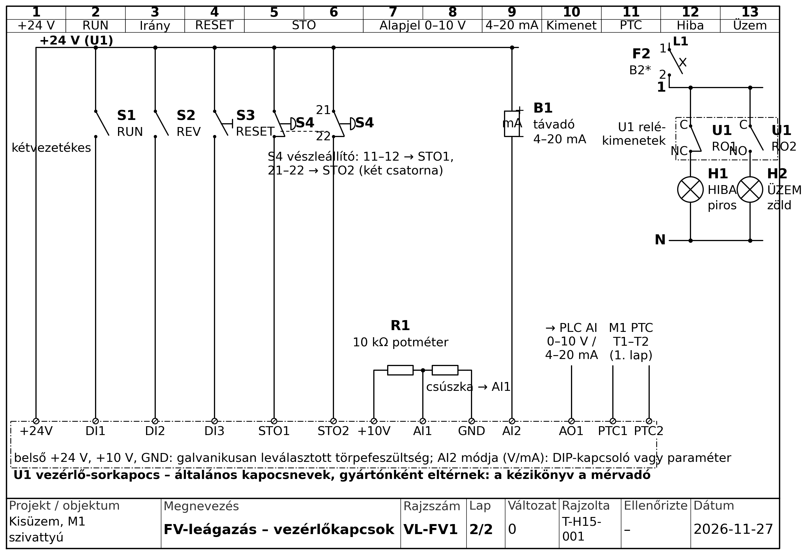

Statikus változat (mint a PDF-ben)
Egy műhelyben a szerelő összeköt egy frekvenciaváltót vagy lágyindítót egy aszinkronmotorral. A bekötés vezeték szinten rendben van, a fázissorrend is stimmel, mégis feleslegesen kiold a védelem, a gép rángat, vagy egyáltalán nem indul el. A hiba legtöbbször nem a kábelezésben, hanem a paraméterezésben van. A készülék gyárilag egy általános, gyakran túlságosan óvatos vagy éppen a konkrét motorhoz nem illő beállítással érkezik. Ha nincs beírva a motor tényleges adattáblája, a hajtás nem tudja megfelelően védeni a motort, és a fordulatszám-szabályozás is pontatlan lesz. Ebben az alfejezetben a bekötéstől a próbaindításig, majd a finomhangolásig és a tipikus hibakódok értelmezéséig jutunk el.
Képzelj el egy szellőztető ventilátort egy ipari csarnokban. A motor 3 kW-os, 400 V-os, 6,1 A névleges áramú. A frekvenciaváltót bekötötték, de a ventilátor a gyári beállítással hirtelen ránt be, a szíj megcsúszik, és a hálózati kismegszakító időnként leold. A paraméterezés során beírjuk a motor adatait, beállítunk egy 15 másodperces felfutási időt, és kiválasztjuk a ventilátoros terhelésnek megfelelő kvadratikus U/f-görbét. A motor ezután lágyan indul, az áramfelvétel az indítás alatt a névleges érték alatt marad, és a szíj sem csúszik meg. Ugyanezt a logikát követjük lágyindítónál is: a kezdeti feszültség és a rámpaidő határozza meg, hogy a motor lágyan vagy rángatva indul-e.
Mielőtt bármilyen paramétert megváltoztatunk, ellenőrizzük a fizikai bekötést. A frekvenciaváltó és a lágyindító erősáramú és vezérlőkörei eltérnek egy egyszerű mágneskapcsolós indítástól.
Frekvenciaváltó bekötése (teljesítmény oldal):
A teljes bekötést az alábbi ábra mutatja. A fém szerelőlapon (1) a Q1 bemeneti védelem (2) és – ha a gyártó előírja – a hálózati fojtó (3) után a váltó bemenetére (4) jut a táp; a kimenetről (5) árnyékolt motorkábel (7) megy a motorhoz. Az árnyékolás csupaszított fonatát a lapon EMC-bilincs (8), a motornál EMC-tömszelence (9) fogja körbe. A vezérlőkapcsokra (6) érkező árnyékolt vezérlőkábelt (10) a motorkábeltől elkülönítve vezetjük; a PE (11) a betápról a váltó PE-kapcsára kerül.
A bilincs csak akkor véd, ha festetlen, fémesen összefüggő lapra szorít; a kapocsjelölés és a fojtó szükségessége a váltó kézikönyvében van. A HTML-kiadásban a részekre mutatva kiemelődnek, és megjelenik a szerepük.
A gyakori árnyékolási hibákat helyes–hibás párokban mutatja az alábbi ábra: (1) a lapon EMC-bilincs helyett hosszú, sodrott „copf” egy csavarra; (2) a motornál műanyag tömszelence, levágott fonattal; (3) a motor- és a vezérlőkábel egy kötegben, párhuzamosan.
A hosszú copf nagy frekvencián nagy impedancia, ezért az árnyékolás szinte hatástalan; a zavar a közeli PLC-, érzékelő- és analóg jelvezetékekben jelentkezik. A HTML-kiadásban a három pár egyenként lapozható.
Lágyindító bekötése:
A lágyindító fő- és vezérlőkörét külső bypass-kontaktorral a Motorvédelmek, lágyindítók és frekvenciaváltók az elosztóban alfejezet (35.1) „Lágyindító bypass-kontaktorral: fő- és vezérlőkör” két rajza mutatja (jelek: Q1 zárlatvédelem, A1 lágyindító, K2 bypass-kontaktor, K1A indítási segédrelé, S0, S1; a K2 tekercsét kizárólag az A1 „felfutás kész” (TOR) relékimenete kapcsolja, az A1 hibarelé 95–96 bontója a teljes vezérlést letiltja). Mivel a K2 a rámpa végén, már teljes feszültségnél, közel azonos potenciálú pontokat köt össze, és a leállításkor a lágyindító előtt enged el, árammentesen kapcsol; ezért a gyártók gyakran AC-1 (és nem AC-3) kategória szerint méretezett bypass-kontaktort írnak elő (ellenőrizendő: a lágyindító kézikönyvének kiválasztási táblázata). A paraméterezés próbájánál az alábbi táblázatot töltsd ki a saját mérésed alapján (a mért oszlopba csak ténylegesen mért értéket írj):
| Beállítás | Beállított érték | Megfigyelt / mért érték | Hogyan mérd? |
|---|---|---|---|
| rámpaidő | … s | felfutási idő START-tól a TOR (K2 behúzás) jelzéséig: … s | stopperrel, a K2 behúzása hallható/látható |
| kezdőfeszültség | … % | a motor az indításkor azonnal megmozdul-e: igen / nem | szemrevételezés |
| áramkorlát | … A (… · In) | legnagyobb indítási áram: … A | lakatfogóval egy fázisvezetőn, csúcsérték-tartással |
| bypass (K2) | – | a K2 behúzásakor az áram nem ugrik meg: igen / nem | lakatfogó a motorkábelen |
Biztonsági korlát. A feladat tanműhelyi (törpefeszültségű) környezetre vagy jogosult oktató felügyeletére vonatkozik; hálózati feszültségen önállóan ne végezd. A feladatgyűjteménybeli (41.4) gyakorlati útmutatóban leírt műveletek csak feszültségmentes állapotban, a DC-kör kisülési idejének kivárása után végezhetők.
A paraméterezés első és legfontosabb lépése a motor adattáblájának beolvasása. A modern készülékek úgynevezett „gyorsbeállítás” vagy „commissioning” menüvel segítenek. A következő adatokra mindenképpen szükség van:
U_n): általában
400 V csillagban vagy 230 V deltában (lásd: Kapocsdoboz, csillag–delta bekötés és
forgásirány).I_n): ez alapján
számolja a hajtás a túlterhelésvédelmet.f_n): általában
50 Hz.n_n): például
1410 1/min. Ebből számolja a váltó a szlipkompenzációt.cosφ): például
0,82.P_n): például 3
kW.Recept: Frekvenciaváltó alapszintű paraméterezése
A frekvenciaváltó nem csak egy „díszes csillag-delta indító”. Feladata a fordulatszám szabályozása is. A vezérlési módot három fő csoportba sorolhatjuk:
A külső kapcsos vezérlés teljes kapocsbekötési rajzát a Motorvédelmek, lágyindítók és frekvenciaváltók az elosztóban alfejezet (35.1) „Teljes frekvenciaváltós leágazás” 2. lapja mutatja; a gyakorlatban ezt a lapot kötöd be, és a kapcsokat paraméterekhez rendeled:

Olvasd le a lapról, melyik bemenetre kerül a vészleállító – és miért kettőre? (Az STO1 és STO2 bemenetre, két külön csatornán, hogy egy vezetékhiba se tegye hatástalanná a nyomatékmentesítést.)
| Kapocs (a lap szerint) | Funkció | Paraméter (a kézikönyv szerint) | Ellenőrzés |
|---|---|---|---|
| DI1 | RUN / ELŐRE | digitális bemenet funkciója: futás | S1 zárásakor a panelen a DI1 állapota „1” |
| DI2 | irányváltás (HÁTRA) | DI2 funkciója: irány | S2 átváltásakor a kijelzett irány megfordul |
| DI3 | hibanyugtázás (RESET) | DI3 funkciója: reset | hiba után S3 nyomására a hibaüzenet törlődik |
| DI4 | fix fordulatszám (pl. 2. sebesség) | DI4 funkciója: előre beállított frekvencia | DI4 zárásakor a kijelzett frekvencia a beállított értékre áll |
| AI1 (+10 V, GND) | fordulatszám-alapjel potméterrel (3 vezeték) | AI1: 0–10 V, min./max. frekvencia | a potmétert végigforgatva a frekvencia a min.–max. között változik |
| AO1 | kimeneti frekvencia/áram a PLC felé | AO1 jele és tartománya | a PLC-n vagy multiméterrel mérve arányos jel |
| RO1, RO2 | HIBA (H1), ÜZEM (H2) | relékimenet funkciója | futáskor a H2, hibánál a H1 világít |
| STO1, STO2 | biztonságos nyomatékmentesítés vészleállítóval (S4) | – (hardveres funkció) | S4 benyomva a motor nyomatékmentes, a panel STO-állapotot jelez |
A kapocsnevek és a paraméterszámok gyártónként eltérnek: mindig a gyártói kapocsszámozás és kézikönyv az irányadó (ellenőrizendő).
Két- és háromvezetékes indítás. Kétvezetékesnél egy kapcsoló (S1) tartósan zárva tartja a DI1-et; háromvezetékesnél START (záró) és STOP (bontó) nyomógomb dolgozik, és a váltó maga öntart. Próbáld ki mindkettőt, és figyeld meg az újraindulást:
| Indítás | Bekötés | Feszültség-visszatérés után |
|---|---|---|
| kétvezetékes | S1 kapcsoló → DI1 | ha az S1 zárva maradt, a motor magától újraindul (ha a paraméter engedi) – csak ott használható, ahol ez a kockázatértékelés szerint megengedett |
| háromvezetékes | S1 START → DI1, S0 STOP → DI2 (a gyártó szerint) | a motor nem indul újra, új START kell |
STO-teszt (felügyelettel). Járó motornál nyomd be az S4 vészleállítót: a motor kifut (nyomatékmentes), a panel STO-állapotot jelez; a vészleállító kioldása után a motor csak új indítási paranccsal indulhat. Ne feledd: az STO nem leválasztás – szereléshez a hálózati oldalon feszültségmentesíteni kell, és ki kell várni a DC-kör kisülési idejét.
Finomhangolási paraméterek: - Szlipkompenzáció: Ha a motor a terhelés hatására lelassul, a váltó a kimeneti frekvenciát kismértékben megnöveli, hogy a fordulatszámot állandóan tartsa. Ezt a motor névleges fordulatszámának beírásával és a szlipkompenzáció engedélyezésével érhetjük el. - Kapcsolási frekvencia: A váltó a kimeneti feszültséget impulzusszélesség-modulációval (PWM) állítja elő. Az alacsony kapcsolási frekvencia (pl. 2–4 kHz) nagyobb zajt generál, de kisebb a veszteség a hajtásban. A magas (pl. 12–16 kHz) halkabb motort eredményez, de a váltó melegedését növeli. Gyári beállításként gyakran 4–8 kHz az elfogadható. - Ugrási frekvenciák: Néha a motor és a gép egy adott fordulatszámon rezonál, ami zajt vagy vibrációt okoz. Ezt az „skip frequency” funkcióval tudjuk letiltani, hogy a hajtás átugorja ezt a tartományt.
A lágyindító nem változtatja a frekvenciát, hanem az 50 Hz-es hálózati feszültséget szabályozza tirisztorokkal az indítás során. A beállítandó paraméterek jóval egyszerűbbek:
Az ábra (a) része a két U/f-görbét mutatja: 25 Hz-en a lineáris görbe -ot, a kvadratikus csak -ot ad, ezért ventilátornál kisebb a fluxus és a veszteség. A (b) rész a fenti szivattyús példa rámpáját mutatja: a 35%-os kezdeti feszültség az indítónyomaték -át adja (10%-on csak 1%-át), a szürke sávban pedig a 75 A-es áramkorlát fogja vissza a feszültséget, amíg a motor fel nem gyorsul: a feszültség itt vízszintesen ≈ 57%-on marad (a nyomaték ≈ 32%-on), a halvány vonal a korlát nélküli rámpát mutatja. A felgyorsulás idejét a rajz csak szemlélteti, ezért a 100% és a by-pass a 10 s-nál később (itt ≈ 14,6 s-nál) jön. Az áramgörbe feltételezett indítási áramaránnyal, álló forgórészre becsült szemléltető érték. A HTML-változatban a görbe típusa, a boost, a kezdeti feszültség, a felfutási idő, az áramkorlát és a terhelő nyomaték csúszkával állítható; ha a kezdeti nyomaték a terhelő nyomaték alá esik, az oldal jelzi, hogy a motor nem indul, csak brummog (lásd a 4. feladatot).
A beüzemelés során mindig üresen, illetve a terheléstől függetlenül, a tényleges gép nélkül kezdjük a próbát, ha lehetséges. Üres paraméternapló: Nyomtatható jegyzőkönyvek és sablonok, B3.
Minta: üzembe helyezési napló – 3 kW-os szíjhajtású ventilátor (a kidolgozott példa; általános paraméternevek, a gyári értékek típusfüggők, példaadatok):
| Paraméter | Gyári | Beállított | Indok |
|---|---|---|---|
| motorfeszültség | 400 V | 400 V | adattábla, Y kapcsolás |
| motoráram | a váltó névleges árama | 6,1 A | túlterhelés-védelem |
| motorfrekvencia | 50 Hz | 50 Hz | adattábla |
| motorfordulatszám | típusfüggő | 1410 1/min | szlipkompenzáció |
| cos φ | típusfüggő | 0,82 | adattábla |
| motorteljesítmény | a váltó névleges teljesítménye | 3 kW | adattábla |
| U/f-görbe | lineáris | kvadratikus | ventilátor |
| felfutási idő | 10 s | 15 s | szíjcsúszás ellen |
| lefutási idő | 10 s | 15 s | OV elkerülése |
| áramhatár | 8 A | a fejezet példája | |
| maximális frekvencia | 50 Hz | 50 Hz | ne forogjon a gép a névleges felett |
| minimális frekvencia | 0 Hz | 15 Hz | motorhűtés, légszállítás (szemléltető; ellenőrizendő: motor- és ventilátorgyártó) |
| vezérlési hely | panel | kapcsok, háromvezetékes | kezelőhelyi nyomógombok |
| automatikus újraindítás | típusfüggő | tiltva | biztonság: váratlan indulás ellen |
| ugrási frekvencia | nincs | nincs | rezonancia nem észlelt |
Próbaüzem: áram 50 Hz-en: …… A; fordulatszám: …… 1/min; DC-köri
feszültség: …… V. Hibanapló: üres. Paraméterkészlet mentve: a készülék
memóriájában és fájlban (név, pl. ventilator_3kW_v1).
Dátum, aláírás: ……
Üres sablon (motor, készülék típusa, gyári száma: ……):
| Paraméter | Gyári | Beállított | Indok |
|---|---|---|---|
| …… | |||
| …… | |||
| …… | |||
| …… |
Próbaüzem (áram, fordulatszám, DC-köri feszültség), hibanapló, mentett fájl neve, dátum, aláírás: ……
Szabvány. A hajtások paraméterezése és bekötése a villamos hajtásokra vonatkozó MSZ EN 61800 sorozat, illetve a készülék gyártói dokumentációja szerint történik. A paraméterezés során a motor védelmének meg kell felelnie a gépek villamos berendezéseire vonatkozó MSZ EN 60204-1 szabványnak. (ellenőrizendő: a pontos szabványkiadás és a készülék konkrét követelményei).
A hajtások a hibákat kódokkal jelzik (pl. OL,
OV, GF). A hibakódok értelmezése
kulcsfontosságú a szerelő számára.
Hibakeresési eset: Frekvenciaváltó túláram-hiba
(OC / OI)
U_n) megfelel-e a kapcsolási módnak (csillag/delta). Ha
egy szivattyú vagy ventilátor hibás, a járókerék beszorulhat; ezt
mechanikailag kell megszüntetni.További tipikus hibaüzenetek:
OV / OU (Overvoltage –
Túlfeszültség): A DC-kör feszültsége túl magas. Általában a
lefutási idő túl rövid. A motor generátorrá válik (a tehetetlenség
hajtja), és visszatáplál. Megoldás: növeljük a lefutási időt, vagy
használjunk fékező ellenállást (brake chopper).UV / LU (Undervoltage – Alacsony
feszültség): A hálózati feszültség túl alacsony vagy egy fázis
kiesett. Ellenőrizzük a bemeneti biztosítót és a hálózati
feszültséget.OL / I2t (Overload – Motor
túlterhelés): A motor tartós árama meghaladja a beállított
névleges áramot. Ha a motor adattáblája helyesen lett beírva, akkor
valószínűleg túlterhelték a gépet, vagy a hajtás hűtése nem
megfelelő.GF / EF (Ground / Earth Fault –
földzárlat): Szigetelési hiba, földzárlat a motorkábelben vagy
a motor kapcsaiban. Ellenőrizzük szigetelési ellenállás-mérővel a kábelt
és a motort – előtte a motorkábelt kösd le a váltó U, V, W
kapcsairól (lásd lent).Figyelem – szigetelésmérés frekvenciaváltós hajtásban. Az 500 V vagy 1000 V-os mérőfeszültség a váltó kimenetére kötve a kimeneti félvezetőket és a szűrőkondenzátorokat károsíthatja, a váltó belső áramkörei miatt pedig a mért érték sem a kábelre és a motorra vonatkozik. A mérés sorrendje:
Tipikus hibaláncolat: GF hiba → a szerelő a
váltóra kötött kábelen 1000 V-tal mér → a kimeneti fokozat meghibásodik
→ a hajtás ezután akkor is hibát jelez, amikor a kábel már rendben van:
a hiba a váltóba „költözött”, és a javítás sokszorosan drágább.
Ha a teljesítményfokozat hibája gyanús, szerviz előtt az Erősáramú félvezetők: tirisztor, triac, IGBT,
MOSFET alfejezet „Hibakeresés: teljesítmény-félvezetők bemérése”
szakasza szerinti feszültségmentes diódateszt segít dönteni (a DC-kör
kisülési idejének kivárása után). A DC-kör és a fékellenállás
(OV-hiba) megértéséhez ugyanannak az alfejezetnek a
teljesítménykör-ábráját érdemes átnézni.
Gyakorlás: ennek az alfejezetnek a kidolgozott példái, gyakorlatai és megoldással ellátott feladatai az Összefoglaló feladatgyűjtemény villanyszerelő tanulóknak című kötet 41.4 szakaszában találhatók.
A frekvenciaváltó és a lágyindító paraméterezése a biztonságos és
megbízható motorüzem alapfeltétele. A legfontosabb lépés a motor
adattáblájának (feszültség, áram, frekvencia, fordulatszám, cosφ)
bevitele a készülékbe, mert ebből számolja a hajtás a motor védelmét. A
rámpaidőket a terheléshez kell igazítani: túl rövid rámpa túláram
(OC) vagy túlfeszültség (OV) hibát okoz. A
frekvenciaváltó kimeneti körében tilos kompenzáló kondenzátort
elhelyezni, és tilos a terhelt kimenetet kapcsolni (kimeneti kapcsoló
csak letiltott kimenetnél, a váltó segédérintkezőjével használható). A
lágyindítónál a kezdeti feszültséget elegendően magasra kell állítani a
motor megindulásához. A forgásirányt fáziscserével vagy paraméterrel
lehet módosítani. A beüzemelés során mindig üres járatással kezdjünk, és
naplózzuk a beállításokat. Továbbvitt eredmény. Az itt
tanult hibakódok értelmezése és paraméterezési eljárás alkalmazható a Hajtástechnika: gépelemek, tengelykapcsoló, csapágy,
szíj és a Motorvédelmek, lágyindítók és
frekvenciaváltók az elosztóban alfejezetekben bemutatott rendszerek
gyakorlati beüzemelésére, valamint a könyv záró, gyakorlati
vizsgafeladataiban.